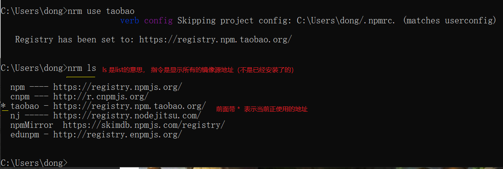

一、nrm:
nrm是专门用来管理和快速切换私人配置的registry;
nrm提供了一些最常用的npm包镜像地址，能够让我们快速的切换安装包时候的服务器地址；
二、镜像：
原来 包 刚一开始是只存在于国外的NPM服务器，但是由于网络原因，经常访问不到，这时候，我们可以在国内，创建一个和官网完全一样的NPM服务器，只不过，数据都是从人家那里拿过来的，除此之外，使用方式完全一样；
三、nrm使用：
1、运行：
npm i nrm -g全局安装’ nrm ' 包；
2、使用
nrm ls查看当前所有可用的镜像源地址以及当前所使用的镜像源地址；
3、使用
nrm use npm 或者
nrm use taobao切换不同的镜像源地址。

注意：nrm 只是单纯的提供了几个常用的 下载包的url地址，并能够让我们在方便的进行切换，但是，我们装包的时候，使用的装包工具，都是 npm;
四、webpack：
1、webpack 是前端的一个项目构建工具，它是基于Node.js 开发出来的一个前端工具；
2、网页中引用的如JS、css、images、fonts(字体文件）、模板文件（.vue)静态资源太多会使网页加载速度过慢（因为我们要发起很多的二次请求），还要处理错综复杂的依赖关系；
为了解决这两个问题，我们需要采用合并、压缩、精灵图、图片的Base64编码，也可以使用requireJS、也可以使用webpack 解决各个包之间的复杂依赖关系。
解决方案：
①、使用Gulp，是基于 task 任务的；
②、使用 webpack ，是基于整个项目进行构建的；
借助于webpack 整个前端自动化构建工具，可以完美实现资源的合并、打包、压缩、混淆等诸多功能；https://www.webpackjs.com/
3、安装的两种方式：
①、运行
npm i webpack -g全局安装 webpack，资源就能在全局使用webpack的命令；
②、在项目根目录中运行
npm i webpack --save-dev安装到项目依赖中